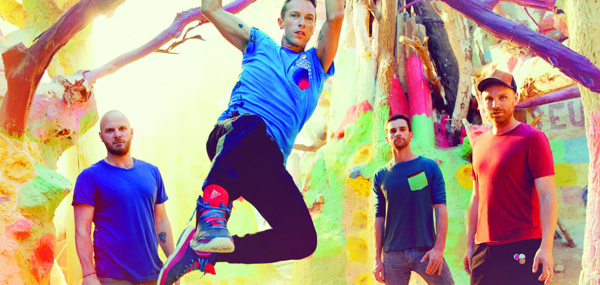

Οι Coldplay είναι βρετανικό συγκρότημα της εναλλακτικής ροκ μουσικής που δημιουργήθηκε στο Λονδίνο το 1996.
Θεωρούνται ένα απο τα πλέον καταξιωμένα συγκροτήματα στο χώρο της alternative ροκ μουσικής με αναρίθμητες επιτυχίες,
πολλά βραβεία και εκατομμύρια φανς σε κάθε γωνιά της υφηλίου.

Bραβεία
Επιβεβαίωση της επιτυχίας τους αποτελούν οι δεκάδες διακρίσεις τους από πιστοποιημένους φορείς στη μουσική βιομηχανία οπως:
-GRAMMYS (7)
-MTV AWARDS
-GLOBAL AWARDS
-VMA
-WMA
-Q AWARDS
-PEOPLE'S CHOICE AWARDS
-BRIT AWARDS (9)
Μαλιστα το 2020 κατέκτησαν το ρεκορ GUINESS ως το πιο επιτυχημένο συγκρότημα στη δημοφιλή μουσική πλατφόρμα "SONGKICK"
Απήχηση
Συνολικές Προβολες Youtube : 11.5 δισεκατομμύρια (!)
Εγγραφές Youtube : 18 εκατομμύρια
Spotify : 39.103.942 μηνιαίοι ακροατές
Θεατές τελευταίας περιοδίας(ΑΗFD TOUR) : 5.2 εκατομμύρια
Συνολικές Πωλήσεις(αλμπουμ+singles) : 80 εκατομμύρια
Αξιοσημείωτες Συνεργασίες
-Beyonce (Hymn for the weekend)
-Jay-Z (Lost)
-Big Sean (Miracles)
-Rihanna (Princess of China)
-Kanye West (Homecoming)